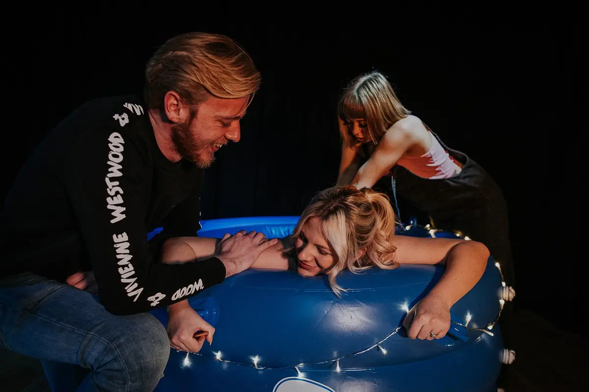
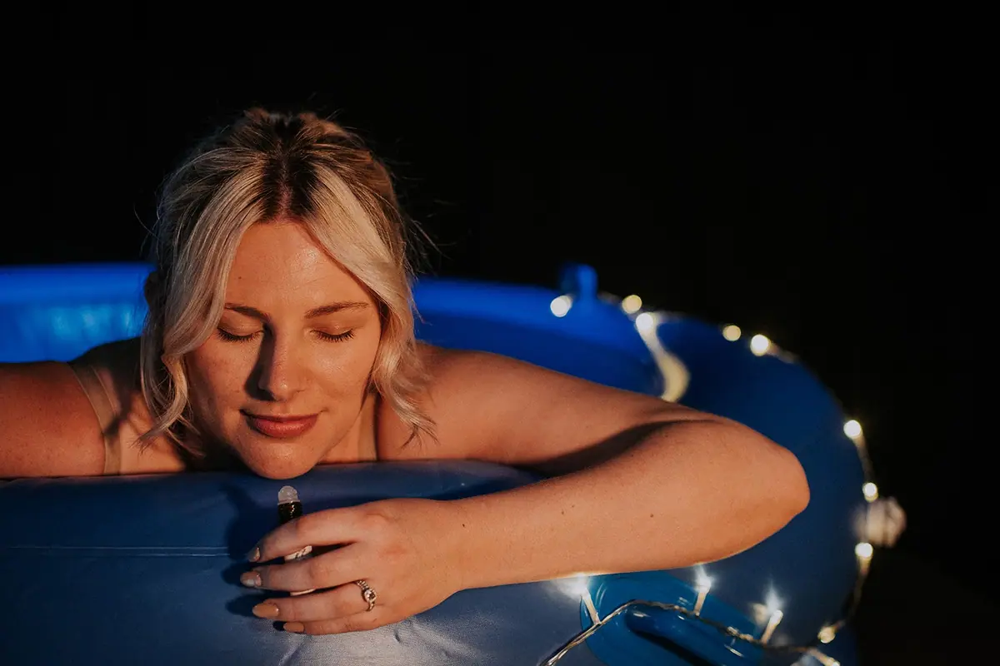

Birth Doula Support
Continuous, compassionate non-medical support before, during and after your birth.


“My advice to anyone thinking to book Leanne would be to not hesitate as she's definitely ‘worth every penny’ as one of the home birth midwives rightly said! She knows her job inside out and ensures she creates a loving and strong relationship with all her clients. I'm so glad I found her. My Husband and I could not have been happier with what we achieved. Thank you!”
Your advocate, your support, your person
A birth doula provides continuous, compassionate non-medical support throughout your entire birth journey — from pregnancy all the way through to your postnatal recovery. Unlike your midwife or doctor, a doula has no clinical responsibilities; their entire focus is on you and your wellbeing.
I build a genuine relationship with you and your partner before birth so that when the day arrives, you have someone who truly knows you, your wishes and your fears. Someone who will hold your hand, remind you of your strength, and make sure your voice is heard.
Research from the Cochrane Review — the gold standard in medical evidence — consistently shows that continuous support during labour leads to significantly better outcomes for birthing people and babies.
Full support before, during & after
Antenatal support
- Personalised birth planning sessions
- Evidence-based information about all your options
- Preparation for all possible birth scenarios
- Partner preparation & coaching
- Hypnobirthing booklet & relaxation techniques
- Access to the birth-hood online Hub
- On-call support (from 38 weeks — varies by package)
Birth support
- Continuous in-person presence throughout labour
- Physical comfort techniques (massage, positions, breathing)
- Emotional support & reassurance
- Gentle advocacy — ensuring your wishes are heard
- Supporting your birth partner to support you
- Free birth pool hire (Ultimate package)
- Free TENS machine hire (Ultimate package)
Postnatal support
- Postnatal debrief & recovery visit
- Postpartum recovery tips & guidance
- Bespoke postpartum care kit (Ultimate package)
- Space to process your birth experience
- Signposting to specialist support if needed
- Infant feeding guidance and resources
- Ongoing phone & email support
Choose your package
Every package includes a free initial consultation so we can make sure we're the right fit before you commit.
- 1 antenatal session (2 hours)
- Personalised birth planning (discussion)
- On-call from 39 weeks
- Full continuous in-person birth support
- 1 hour immediate post-birth support
- 1 postnatal visit (90 minutes)
- Phone & email support for 2 weeks postpartum
- Optional birth pool hire (additional cost)
- 2 antenatal sessions (2–3 hours each)
- Personalised birth planning & hypnobirthing resources
- On-call from 10 days before your due date
- Full continuous in-person birth support
- 2 hours immediate post-birth support
- 1 postnatal visit (2 hours)
- Ongoing phone & email support for 6 weeks
- Birth pool & TENS machine hire included
- Full online Hub & hypnobirthing access
- 4 antenatal sessions (2–3 hours each)
- Dedicated, bespoke birth planning
- On-call from 38 weeks
- Full continuous in-person birth support
- 3 hours immediate post-birth support
- 3 postnatal visits (2 hours each)
- Unlimited phone & email support for 12 weeks
- Birth pool & TENS hire + all digital resources
- Appointment accompaniment & flexible sessions
- Bespoke postpartum recovery kit + doula gift bag
Payment plans available for all doula services, just let me know! Book a free consultation →
“My advice to anyone thinking to book Leanne would be to not hesitate as she's definitely ‘worth every penny’ as one of the home birth midwives rightly said! She knows her job inside out and ensures she creates a loving and strong relationship with all her clients. I'm so glad I found her. My Husband and I could not have been happier with what we achieved. Thank you!”
Ready to have your person in the room?
Book a free consultation to discuss birth doula support for your birth.
Book Free Consultation